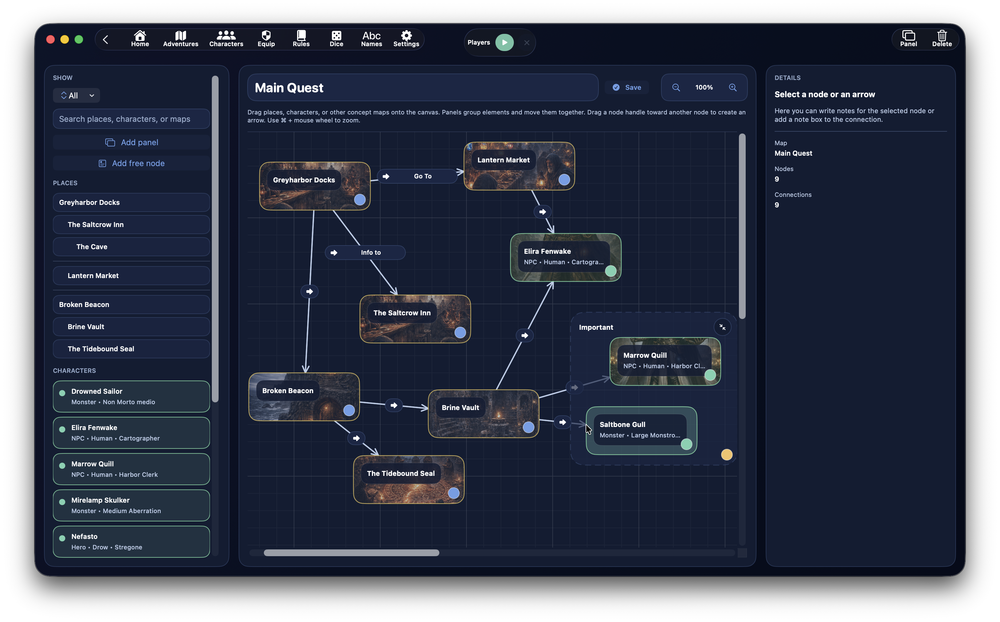

Beziehungsdiagramme¶

Der Bereich Beziehungsdiagramme dient dazu, eine visuelle Darstellung der Beziehungen zwischen Orten, Charakteren, anderen Beziehungsdiagrammen und freien Notizen aufzubauen.
Es ist keine geografische Karte und auch kein generisches Whiteboard, sondern ein Werkzeug, das dafür gedacht ist, die Knoten einer Kampagne schnell, lesbar und navigierbar miteinander zu verbinden.
Du kannst es verwenden, um:
- die erzählerische Struktur des Abenteuers zu organisieren
- Orte und Charaktere zu verbinden
- Beziehungen zwischen wichtigen Elementen sichtbar zu machen
- thematische Rahmen hinzuzufügen
- Ideen direkt auf Knoten, Rahmen und Verbindungen zu notieren
Wo es sich befindet¶
Beziehungsdiagramme können von zwei Hauptstellen aus geöffnet werden:
- vom Abenteuer-Dashboard aus im Panel
Beziehungsdiagramme - vom Dashboard eines Ortes aus, wenn du ein mit diesem Ort verknüpftes Beziehungsdiagramm erstellen oder öffnen möchtest
Das bedeutet, ein Beziehungsdiagramm kann sein:
- abenteuerweit
- an einen bestimmten Ort gebunden
Aufbau des Bildschirms¶
Der Bildschirm der Beziehungsdiagramme ist in drei Hauptspalten unterteilt:
- linke Seitenleiste mit Palette und Kartenliste
- zentraler Canvas, auf dem du die Karte aufbaust
- rechter Inspector mit den Details des ausgewählten Elements
Sidebar: Palette und Quellen¶
Die linke Seitenleiste bündelt alles, was du in die Karte einfügen kannst.
Die wichtigsten Kategorien sind:
OrteCharaktereKarten
Zusätzlich kannst du arbeiten mit:
- Filtern
- Textsuche
- Erstellung von Rahmen
- Erstellung freier Knoten
Filter der Palette¶
Die Palette unterstützt einen eigenen Filter mit folgenden Modi:
AllesOrteCharaktereKarten
Suche in der Palette¶
Die Suchleiste der Palette dient dazu, schnell zu finden:
- einen Ort
- einen Charakter
- ein bestehendes Beziehungsdiagramm
Was du in den Canvas ziehen kannst¶
In den Canvas kannst du ziehen:
- Orte des Abenteuers
- für das Abenteuer verfügbare Charaktere
- andere Beziehungsdiagramme
- freie Knoten
Die in der Palette verfügbaren Charaktere stammen nicht wahllos aus der gesamten Datenbank: das System verwendet die mit dem Abenteuer verknüpften Charaktere.
Orte in der Palette¶
Orte in der Palette werden unter Berücksichtigung der Hierarchie der Orte im Abenteuer angezeigt.
Charaktere in der Palette¶
Die in der Palette angezeigten Charaktere haben einen informativen Untertitel, der Folgendes enthalten kann:
- Typ
- Abstammung
- Klasse
Karten in der Palette¶
Der Bereich Karten in der Palette zeigt die anderen Beziehungsdiagramme des Abenteuers.
Das ist besonders nützlich, weil ein Beziehungsdiagramm einen Knoten enthalten kann, der auf ein anderes Beziehungsdiagramm verweist, sodass ein Netzwerk miteinander verbundener Karten entsteht.
Ein neues Beziehungsdiagramm erstellen¶
Du kannst ein neues Beziehungsdiagramm erstellen:
- über das Abenteuer-Dashboard
- über das Dashboard eines Ortes
- direkt aus dem Bildschirm der Beziehungsdiagramme, wenn du bereits eines verwaltest
Beim Erstellen weist DnDino automatisch einen fortlaufenden Namen zu, etwa:
BeziehungsdiagrammBeziehungsdiagramm 2Beziehungsdiagramm 3
Eine Karte umbenennen¶
Der Titel der aktiven Karte kann direkt im Bildschirm bearbeitet werden.
Wenn du das Feld verlässt oder die Änderung bestätigst, speichert DnDino den neuen Namen.
Eine Karte löschen¶
Wenn du eine aktive Karte auswählst, kannst du sie mit der Schaltfläche Löschen entfernen.
Der zentrale Canvas¶
Der Canvas ist der Hauptbereich, in dem du die Karte aufbaust.
Hier kannst du:
- Knoten aus der Palette ziehen
- Knoten verschieben
- Rahmen erstellen
- Knoten und Rahmen mit Pfeilen verbinden
- die allgemeine Struktur der Kampagne auf einen Blick lesen
Arten von Elementen im Canvas¶
Im Canvas gibt es drei Hauptfamilien von Elementen:
- Knoten
- Rahmen
- Verbindungen
Knoten¶
Knoten repräsentieren:
- einen Ort
- einen Charakter
- ein Beziehungsdiagramm
- einen freien Knoten
Rahmen¶
Rahmen dienen dazu, mehrere Knoten visuell in einem gemeinsamen Bereich zu gruppieren.
Verbindungen¶
Verbindungen sind Pfeile, die Knoten und Rahmen miteinander verbinden.
Normale Knoten und freie Knoten¶
Knoten, die mit echten Datensätzen verknüpft sind¶
Wenn du einen Ort, einen Charakter oder ein Beziehungsdiagramm in den Canvas ziehst, erstellst du einen Knoten, der mit einem echten Datensatz der App verbunden ist.
Das bedeutet, der Knoten:
- zeigt den echten Titel des Elements
- kann einen kontextbezogenen Untertitel anzeigen
- kann den verknüpften Datensatz aus dem Inspector heraus öffnen
Freier Knoten¶
Der Freie Knoten ist ein besonderer Knoten für Ideen und Notizen, die mit keinem echten Datensatz verknüpft sind.
Er ist nützlich für:
- erzählerische Notizen
- abstrakte Konzepte
- Ereignisse
- Ideengruppen
- Design-Erinnerungen
Gruppenrahmen¶
Die Schaltfläche Rahmen erzeugt einen visuellen Container innerhalb des Canvas.
Ein Rahmen:
- hat einen Titel
- hat eine eigene Notiz
- kann verschoben werden
- kann in der Größe verändert werden
- kann eingeklappt werden
- kann automatisch Knoten enthalten, die in seinen Bereich fallen
Knoten verschieben¶
Knoten können frei im Canvas verschoben werden.
Ihre Position wird in der Karte gespeichert, sodass das Layout erhalten bleibt.
Rahmen verschieben¶
Auch Rahmen können verschoben werden.
Wenn du einen Rahmen verschiebst, kann DnDino die darin enthaltenen Knoten mit verschieben, damit die Gruppe lesbar bleibt.
Einen Rahmen in der Größe verändern¶
Rahmen können über ihre Ecken in der Größe verändert werden.
Einen Rahmen einklappen¶
Ein Rahmen kann eingeklappt werden.
Wenn er eingeklappt ist:
- nimmt er weniger Platz ein
- werden die inneren Knoten im Canvas verborgen
- erschweren die Verbindungen der verborgenen Elemente nicht die Lesbarkeit
Eine Verbindung erstellen¶
Verbindungen zwischen Elementen werden erzeugt, indem du vom Ankerpunkt eines Knotens oder Rahmens zu einem anderen kompatiblen Element ziehst.
Du kannst verbinden:
- Knoten → Knoten
- Knoten → Rahmen
- Rahmen → Knoten
- Rahmen → Rahmen
DnDino verhindert:
- identische doppelte Verbindungen
- Verbindungen eines Elements zu sich selbst
Wofür die Pfeile dienen¶
Pfeile dienen dazu, Beziehungen darzustellen, zum Beispiel:
- ein Charakter, der einen Ort kontrolliert
- ein Ort, der zu einem anderen führt
- eine Karte, die auf eine Unterkarte verweist
- eine thematische Gruppe, die mit einem erzählerischen Knoten verbunden ist
Die Bedeutung der Pfeile ist frei, deshalb ist es sinnvoll, in deiner Kampagne eine konsistente Konvention zu verwenden.
Inspector: Details des ausgewählten Elements¶
Die rechte Spalte verändert ihren Inhalt je nachdem, was du auswählst.
Sie kann die Details anzeigen von:
- einem Knoten
- einem Rahmen
- einer Verbindung
- oder der Karte als Ganzes, wenn nichts ausgewählt ist
Wenn du einen Knoten auswählst¶
Wenn du einen Knoten auswählst, zeigt der Inspector:
- Titel
- Untertitel
- gegebenenfalls Schaltfläche
Datensatz öffnen - kontextbezogene Beschreibung, wenn verfügbar
- Knotennotizen
- Schaltfläche zum Löschen des Knotens
Den verknüpften Datensatz öffnen¶
Wenn der Knoten verknüpft ist mit:
- einem Ort
- einem Charakter
kannst du das entsprechende Formular direkt öffnen.
Wenn der Knoten stattdessen mit einem anderen Beziehungsdiagramm verknüpft ist, öffnet die Schaltfläche diese Karte und behält außerdem eine kleine Navigationshistorie zwischen Karten bei.
Kontextbeschreibung des Knotens¶
Für manche Knotentypen zeigt der Inspector auch bereits vorhandene echte Beschreibungstexte der App:
- für einen Ort die
SL-Beschreibung - für einen Charakter die Charakterbeschreibung
Knotennotizen¶
Jeder Knoten hat außerdem eigene Notizen, getrennt vom Quelldatensatz.
Wenn du einen Rahmen auswählst¶
Wenn du einen Rahmen auswählst, zeigt der Inspector:
- Rahmentitel
- Anzahl der enthaltenen Elemente
- Rahmennotizen
- Schaltfläche zum Löschen des Rahmens
Wenn du eine Verbindung auswählst¶
Wenn du einen Pfeil auswählst, zeigt der Inspector:
- Zusammenfassung der Verbindung
- Notiz des Pfeils
- Schaltfläche zum Löschen der Verbindung
Notizen an Verbindungen sind sehr nützlich, wenn du der Beziehung eine genauere Bedeutung geben willst, zum Beispiel:
- Allianz
- Abhängigkeit
- Verwandtschaft
- Übergang
- Ursache und Wirkung
Wenn du nichts auswählst¶
Wenn kein Element ausgewählt ist, zeigt der Inspector eine Zusammenfassung der Karte:
- Kartenname
- Anzahl der Knoten
- Anzahl der Verbindungen
Zoom und Navigation¶
Der Bildschirm unterstützt:
- Zoom
- Panning des Canvas
- Pinch-Gesten
- schnelle Maus- und Trackpad-Kurzbefehle
Bilder in Knoten¶
Knoten, die mit Orten oder Charakteren verknüpft sind, können auch das Titelbild des verknüpften Datensatzes als visuellen Hintergrund verwenden.
Miteinander verknüpfte Beziehungsdiagramme¶
Eine der stärksten Möglichkeiten des Systems ist die Fähigkeit, ein Beziehungsdiagramm mit einem anderen zu verknüpfen.
Dadurch kannst du aufbauen:
- eine allgemeine Karte des Abenteuers
- Nebenkarten für bestimmte Bereiche
- spezialisierte Karten für Charaktere, Fraktionen oder Nebenhandlungen
Wann sie besonders sinnvoll sind¶
Beziehungsdiagramme sind besonders nützlich, wenn du:
- eine lange Kampagne planen willst
- komplexe Beziehungen visualisieren willst
- Charaktere und Orte in Blöcken organisieren willst
- Nebenhandlungen vorbereiten willst
- eine strategische Übersicht brauchst, die nicht von langen Texten abhängt
Unterschied zu Orte¶
Der Bereich Orte organisiert das Abenteuer auf räumlicher und inhaltlicher Ebene.
Beziehungsdiagramme organisieren die Kampagne dagegen auf relationaler Ebene.
Kurz gesagt:
Orte= Weltstruktur und kontextbezogene InhalteBeziehungsdiagramme= logische, erzählerische und relationale Struktur
Unterschied zu interaktiven Karten¶
Interaktive Karten dienen dazu, reale Orte mit Markern auf einer grafischen Karte zu navigieren.
Beziehungsdiagramme dienen dagegen dazu, Konzepte, Charaktere, Orte und Ideen miteinander zu verbinden.
Gute Praxis¶
Um Beziehungsdiagramme gut zu nutzen, empfiehlt es sich:
- eine allgemeine Abenteuerkarte zu pflegen
- kleinere Karten für Bereiche oder Kapitel zu erstellen
- Rahmen zu verwenden, um Knotengruppen zu trennen
- freie Knoten für Ideen zu nutzen, die noch keinen echten Datensatz haben
- Knoten und Pfeile mit kurzen, aber nützlichen Notizen zu versehen
Kurz gesagt¶
DnDinos Beziehungsdiagramme sind ein fortgeschrittenes Organisationswerkzeug.
Sie erlauben es, eine visuelle und navigierbare Sicht auf die Kampagne zu bauen, indem sie miteinander verbinden:
- Orte
- Charaktere
- andere Karten
- freie Notizen
- durch Pfeile dargestellte Beziehungen
Tip
Wenn eine Kampagne komplex wird, versuche ein allgemeines Beziehungsdiagramm für die Gesamtübersicht und kleinere Karten für einzelne Städte, Fraktionen oder Nebenhandlungen zu verwenden. Das ist eine der wirksamsten Methoden, um nicht den Faden zu verlieren.